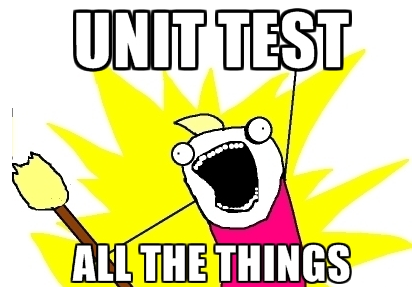
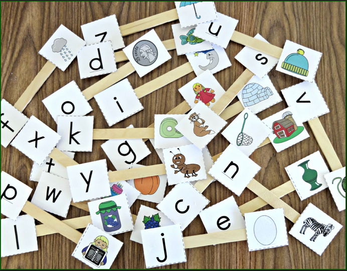

Testing

Exhaustive testing of software is not feasible because the number of such tests is so great as to be impossible to perform within a reasonable time. What is possible, however, is the progressive construction of a suite of unit tests as the project progresses accompanied by test harness that allows this suite to be exercised on a regular basis and whenever changes take place to the code base or additional tests are added.
Algorithmic complexity

We discuss algorithmic complexity and how it is measured. We examine the performance differences between linear and binary search methods. Some indicative running times for different sort algorithms are presented to highlight the importance of choosing the correct implementation of a particular algorithm in the course of development.
Testing-&-Debugging

We explore the BlueJ diary-prototype project as a prelude to unit and regression testing.In introducing unit tests we examine the role and experiment with both positive and negative tests.
Testing-&-Debugging-(contd.)
We implement some simple unit tests. We first test manually and progress to semi-automated tests. Then we introduce test automation by showing how batches of unit tests can be run automatically. The BlueJ Debugger is used to locate any errors discovered during testing. A helpful feature of the BlueJ framework is exercised to record and replay a suite of tests.
Sorting-searching

Explore two contrasting sort algorithms, the inefficient Selection sort and a significantly faster Merge sort. Use Binary search to locate a specific element in a sorted array. Explore the performance of these algorithms. The results may surprise you.